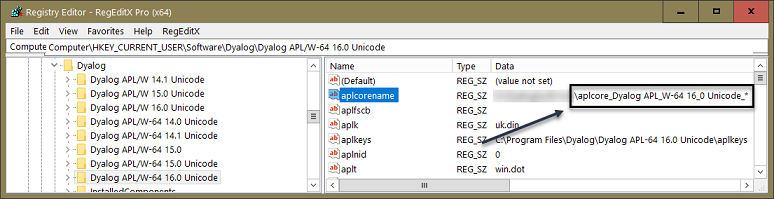

The workspace (WS) is where the APL interpreter manages all code and all data in memory.
The Dyalog tracer / debugger has extensive edit-and-continue capabilities; the downside is that these have been known occasionally to corrupt the workspace. However, there are many other ways the workspace may get corrupted:
- The interpreter might carry a bug.
- The user uses
⎕NAincorrectly. - WS FULL.
- …
The interpreter checks WS integrity every now and then; how often can be influenced by setting certain debug flags; see The APL Command Line in the documentation for details. Be warned that…
- the
-DWflag slows an application down extremely even on very fast machines. -Dcand-Dwslows the interpreter down in any case, but the effect depends on the workspace size.You might not notice anything at all with, say,
maxws=64MBbut you will notice a delay withmaxws=2GB.
When the interpreter finds that the WS is damaged it will create a dump file aplcore and exit to prevent your application from producing (or storing) incorrect results.
Regularly rebuilding the workspace from source files removes the risk of accumulating damage to the binary workspace.
An aplcore is useful in two ways:
- You can copy from it. Add a colon after
aplcore:)copy aplcore. myObjIt's not a good idea to copy the whole workspace; after all something has been wrong with it.
It may be fine to recover a particular object (or some objects) from it, although you would be advised to rebuild recovered objects from the source (for example via the clipboard) rather than using binary data recovered from an aplcore.
- Send the aplcore to Dyalog. It's kind of a dump, so they might be able to determine the cause of the problem. Naturally it helps when you can provide information about your last actions or, even better, reproduce the aplcore at will.
You can create an aplcore deliberately by executing:
2 ⎕NQ '.' 'dumpws' 'C:\MyAplcore'This might be a useful thing to do just before executing a line you already know will cause havoc in one way or another.
In order to create a real aplcore, in the sense of corrupting the workspace, this will do:
∇Crash;MEMCPY
:Trap 102
⎕NA'dyalog32|MEMCPY u4 u4 u4'
:Else
⎕NA'dyalog64|MEMCPY u4 u4 u4'
:EndTrap
MEMCPY 0 0 4
∇By default, an aplcore is saved with the name aplcore in what is at that moment the current directory. This is not nice because it means that any aplcore might overwrite an earlier one. That can become particularly annoying when you try to copy from an aplcore with :
)copy C:\MyAplcore.but this might actually create another aplcore, overwriting the first one. Now it might well be too late to restrict the attempt to copy to what is most important to you: the object or objects you have worked on most recently.
If the aplcore is saved at all that is, because if the current directory is something like C:\Program files\ then you won't have the right to save into this directory anyway.
When a program asks Windows to save a file in a location where that program has no write permission (e.g. C:\Program Files, C:\Program Files (x86), C:\Windows) then Windows will tell the application that it has fulfilled the request, but the file will actually be saved in something like C:\Users\{username}\AppData\Local\VirtualStore\Program Files\Dyalog\Dyalog APL-64 17.0 Unicode\
For that reason it is highly recommended to set the value aplcorename in the Windows Registry:

This means that aplcores…
- get saved in a folder of your choice.
- start their names with
aplcore_Dyalog APL_W-64 16_0 Unicode_. - are numbered starting from 1; this as achieved by adding the trailing
*.
The same can be achieved by specifying APLCORENAME=... on the command line. That's particularly important for Windows Services.